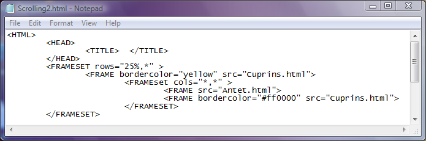
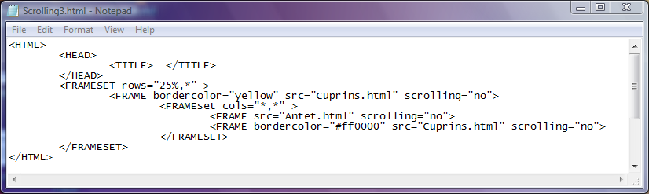

Atributul scrolling
Atributul scrolling seteaza existenta barelor de derulare in cadrele unei pagini web.
Valorile acestui atribut sunt:
a) scrolling="no" - determina absenta barelor de derulare in cadrul respectiv. Probleme pot fi
in cazul in care pagina web incarcata in acel cadru este mai mare decat cadrul si informatii necesare
nu mai pot fi vizualizate. Din acest motiv aceasta valoare trebuie utilizata cu discernamant.
b) scrolling="yes" - determina prezenta barelor de derulare in cadrul respectiv. Cu ajutorul barelor
de derulare utilizatorul poate naviga pe intreaga pagina web.
c) scrolling="auto" - determina lasarea deciziei in seama browserului in sensul ca atunci cand nu
este cazul barele de derulare nu sunt afisate iar in situatia ca pagina web este extinsa in afara suprafetei
cadrului, browserul va afisa si barele de derulare ale acelui cadru.
In mod implicit browserul considera atributul scrolling prestabilit la valoarea auto.
Iata si exemple de manipulare a barelor de derulare cu ajutorul atributului scrolling. Click pe cod pentru
a deschide pagina web corespunzatoare...
In primul exemplu nu este setat atributul scrolling pentru nici unul dintre cele trei cadre. Adica, este
valabila setarea implicita, auto. In cadrul din partea superioara este introdusa implicit o bara de derulare pe
verticala
deoarece continutul paginii web incarcate in acel cadru nu este vizibil in intregime. In celelalte
doua cadre browserul nu afiseaza nici o bara de derulare deoarece nu este cazul, ambele pagini web incarcate
in acele cadre avand tot continutul vizibil daca fereastra browserului este maximizata. Micsorand
dimensiunile ferestrei browserului puteti observa ca la un moment dat si celelalte ferestre vor fi dotate
cu bare de derulare.

Iata acelasi exemplu dar fiind setata valoarea atributului scrolling la valoarea "no". Indiferent de
dimensiunile ferestrei browserului nu vor fi afisate bare de derulare, ele fiind inhibate de valoarea "no"
a atributului scrolling.

Inapoi la Cadre...